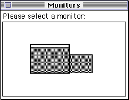

DSpUserSelectContext
You can use the DSpUserSelectContext function to present a dialog box that allows the user to select a display.OSStatus DSpUserSelectContext ( DSpContextAttributesPtr inDesiredAttributes, DisplayIDType inDialogDisplayLocation, DSpEventProcPtr inEventProc, DSpContextReference *outContext );
inDesiredAttributes- A pointer to an attributes structure that specifies a minimum set of required display characteristics.
- inDialogDisplayLocation
- The display ID of the display on which to present the selection dialog box. If this parameter is 0, DrawSprocket positions the dialog box automatically on the main screen.
inEventProc- A pointer to an application-defined event processing routine that allows you to handle events received by the dialog box that DrawSprocket cannot process, such as update events, in your game context area.
- outContext
- On exit, a reference to a context.
- function result
- A result code.
DESCRIPTION
The DSpUserSelectContext function presents a dialog box the user can select a context from. In the selection dialog box (Figure 2-1), all graphics devices appear, although the user can select only those contexts that meet or exceed the minimum characteristics given in theinDesiredAttributesparameter. The function returns, in the outContext parameter, a reference to the context the user selects.You can specify which display to present the dialog box on in the inDialogDisplayLocation parameter; if this parameter is 0, DrawSprocket positions the dialog box automatically on the main screen.
The game must provide an event processing function to handle events that are generated when the user moves the dialog box around on the screen. The
inEventProcparameter contains a pointer to this function. See theMyEventHandlerfunction (page 2-76).Figure 2-1 A context-selection dialog box

CALLING RESTRICTIONS
Do not call this function during an interrupt.